brian truong
brian
truong
software engineering + visual arts
software engineering
visual arts
contact
Hello World!
I'm a software engineer working at Microsoft.
I also like making art, some of which can be found
here. In my spare time, I like volunteering,
reading, and playing games.
My interests include:
- * Full stack development
- * Game development + design
- * Internet of things
- * Deep learning AI
- * Cloud computing
- * UX/UI design
Education

Bachelor of Science, Computer Science
Minor: Multimedia
- * Presidential Scholarship
- * Summit Scholarship
Work Experience
Making cool stuff as part of the Cloud + AI Group.

Developed a microservice agent that connects devices to various
internet of things cloud services, allowing for telemetry reports
and over the air updates of the device.

Designed and developed dashboards for administrators to quickly
audit user permissions and activities.
Refactored existing dashboards to improve performance and ensure
visual design language conformity.
Developed a microservice with a RESTful API to manage images from
customer repair orders on the cloud, integrating it into
preexisting software, and covering it with comprehensive unit
tests.
Additionally, proactively prepared and presented a cost-benefit
analysis of moving towards serverless solutions.
Developed a modular Google Chrome start page to bolster employee
productivity
As part of a team, designed a wearable device that helps users
track and use medication. 3D modelled + printed the components,
integrating them with an Arduino and electrical components.
Community Engagement
Rotaract is a volunteering organization affiliated with Rotary
International.
Members work on projects to improve local and international
communities, whether it is aiding the local food bank, cleaning up
beaches, or raising money for disaster relief.
Advancement via Individual Determination (AVID) is a program
dedicated to providing students with the skills to succeed in
school.
Tutors support students in the program, faciliating socratic
discussions and providing guidance.
A program provided by Google designed to teach the basics of
computer science to young children via
Scratch.
As a volunteer teaching this program, tracked student work, and
provided students with guidance on their issues.

The Boys & Girls Clubs of America is a non-profit organization
that provide school children with after school programs.
As a volunteer, performed supervision, led activities, and
maintained technology rooms.
Selected Works
A collection of my best works.
A 3rd person platformer-shooter game.
Group project for the University of Oregon CIS 410: Game
Programming course.
Personally responsible for leading the project, creating the art
assets, and coding.
Concept art can be found
here.
An image that conveys a short, circular narrative through a
"rolling" perspective.
The piece pays homage to
Alien.
Created for the University of Oregon ARTD 360: Digital Imaging
course.
-
* Made in
Photoshop
-
* 3d models found and posed in
Garry's Mod
-
* Hallway panorama taken in Klamath Hall, University of Oregon
An image series that provides an abstract portrayal of the
hero's journey.
Created for the University of Oregon ARTD 360: Digital Imaging
course.
-
* Made in
Photoshop
- * Images taken from the web
A stop motion animation that follows the rise and fall of a
civilization, commenting on its overconsumption of natural
resources.
Created for the University of Oregon ARTD 251: Time-based Digital
Arts course.
- * 739 unique frames
-
* Edited in
Premiere